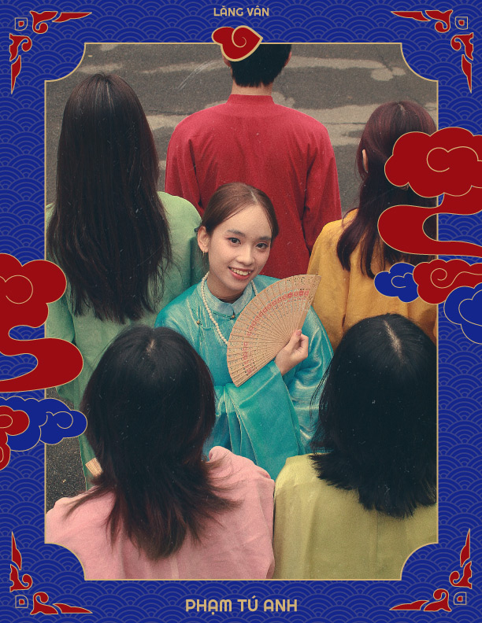

|  |
Một chút xíu về: ________________Phạm Tú Anh (aka Cô Ti Hinn)
|
|---|
"Xin chào mọi người, mình là nhà sáng tạo nội dung tại dự án Lăng Vân. Hiện tại, mình đang là sinh viên năm hai ngành Truyền thông Đa phương tiện tại Học viện Công nghệ Bưu chính Viễn thông. Mang trong mình dòng máu nhiệt huyết của cung Bạch Dương, nên mình rất "ham" chơi và luôn " hiếu thắng" trong mọi cuộc đua. Thích nghe kể chuyện và luôn là bờ vai vững chắc cho ai còn đang FA nên đừng ngại ngần nhấc máy lên và nhắn tin mình nha. Đôi lúc hơi "ngơ ngơ" nhưng thú thật mình rất vui tính và không ngại giao lưu đâu nè. Về sở đoản, mình khá dở trong việc bếp núc, nhưng nếu mọi người không "ngại", mình sẵn lòng phụng vụ bữa ăn tình yêu miễn phí. Tuy là con dân Hà Nội chính cống, nhưng hãy thứ tha cho việc lạc đường trên những con phố nội thành của mình. Là một "bánh bèo" girl, nên tính tình mình thất thường như thời tiết tại Hà Nội, sáng thì nắng mà chiều thì mưa. Mình sinh ra và lớn lên tại xứ sở Hà Thành mộng mơ, nên mình rất yêu thích Việt phục bởi bề dày lịch sử và những giá trị văn hóa độc đáo mà nó đem lại trong bản sắc dân tộc Việt Nam. Thông qua Lăng Vân, mình muốn lan tỏa vẻ đẹp của người con gái Việt trong tà áo tấc đến với mọi người. Hãy theo dõi và ủng hộ nhóm mình trong dự án lần này nhé."